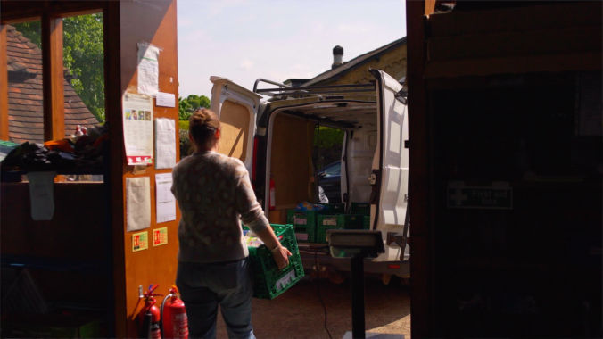
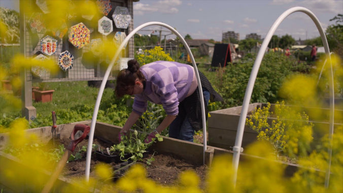

Made for Nonprofit Directors, CSR Leads, and Charity Founders who want powerful, respectful video campaigns that inspire action, without draining your team's energy or compromising your community.
This is a simple, stress-free video strategy that helps forward-thinking charities build lasting donor trust.
Tired of the feeling that you should be filming and photographing every single community moment yourself?
You shouldn't have to spend your days managing stressed-out communications teams who are forced to shoot everything on smartphones. You usually end up with shaky clips that just don't do justice to your incredible impact or win over donors.
We’re Katy and Eugene, and we've seen passionate organizations get stuck in this frustrating loop. We know charities don't lack heart. Instead, they are forced to choose between corporate agencies or well-meaning amateurs who miss deadlines. That is why we built a video process that fully respects your community while hitting your big fundraising goals.
The real reason your videos aren't driving continuous donations isn't a lack of donor empathy or a bad mission statement. It’s the "One-and-Done" Gala Trap combined with standard commercial videographers who don't understand trauma-informed storytelling. Traditional creators focus strictly on hyper-stylized aesthetic choices. They lack the editorial patience to build real rapport with vulnerable communities, and they leave you with a massive, uncompressed video link that sits gathering dust on an unoptimized YouTube channel.
If you don't fix this now, you will keep wasting your strictly monitored budget on disjointed content that triggers consumer skepticism or looks like superficial "greenwashing." Your internal team will continue to face burnout acting as impromptu production fixers, crowd controllers, and script supervisors. Meanwhile, your competitors and peers will continue to capture the digital narrative, secure critical grant applications, and lock in recurring monthly donors.
Introducing **Munjiri Charity Video Production**: The complete, trauma-informed documentary and marketing framework specifically engineered to capture authentic human stories with deep dignity while delivering high-converting digital assets that drive real organizational ROI.
**9. The Features & Benefits (What it is + What it does)**
- **Deep Hospitality & Trauma-Informed Interviewing**: So you can finally capture raw, emotionally resonant, and unscripted soundbites without ever exploiting your beneficiaries or risking community backlash.
- **Complete Operational Ownership**: Which means goodbye to stretching your staff to burnout; we handle all research, strict legal releases, multi-location logistics, and backend planning independently.
- **Multi-Asset Campaign Execution**: So you can maximize your asset lifespan with optimized vertical clips and short-form social cuts instead of getting stuck with an expensive, single-use film.
- **Board- and Funder-Ready Reporting**: Which means you can easily pass institutional compliance checks and confidently present clear production milestones directly to your trustees or corporate sponsors.
"Katy was so thoughtful and worked deftly with our team to create a beautiful, thoughtful, and insightful video. The footage is the best we have seen from our schools – the colours, images, and shots are amazing. We are so grateful for her expertise and time."
— **Reshma Patel, Impact Network**
When you partner with us for your next campaign, you receive:
- **The Core Strategic Documentary Framework** (Comprehensive research, narrative architecture, and on-site professional filming)
- **Complete Administrative & Compliance Layer** (Informed consent workflows, GDPR compliance, and legal release management)
- **Premium Post-Production & Sound Design** (High-taste editing, professional color grading, and licensed audio tracks)
- **Funder-Ready Logistics & Project Management Reporting** (Direct-to-board delivery metrics and milestone tracking)




Plus, you'll also get our **Social Campaign Lifespan Extension Pack**—including 3 fully optimized vertical cuts and short-form assets—to help you accelerate donor engagement across Instagram, LinkedIn, and TikTok completely free.
We stand completely behind our 8+ years of global non-profit experience. Work with us through our streamlined 3-stage milestone review process entirely risk-free. If at the final draft review stage you do not see a polished, high-taste visual representation that accurately honors your community and matches your approved script, we will revise the edit until it is correct or refund your final production tier payment.
Get a completely tailored, transparent quote designed to maximize your specific budget allocation today.
Book Your Strategic Video Production Call Now
P.S. In 6 months, your communications team can still be struggling with smartphone footage and a clogged, unoptimized YouTube channel, or you can have a high-taste, multi-asset video asset pulling in recurring donors and grant funding completely on autopilot.
How much will our charity video cost?
We offer tailored quotes based on your exact scope, whether you are a local grassroots organization or an international non-profit, ensuring zero wasted overhead.
How much internal staff time will this require?
Very little. We sit in the sweet spot between strategy and craft, taking care of the research, scripting, and crowd control so your team can stay fully present in their daily operations.
How do you handle sensitive or vulnerable populations?
We reject exploitative tropes and "poverty porn." We utilize deep human literacy to ensure every participant has true informed consent, feels respected, and is framed with genuine dignity.